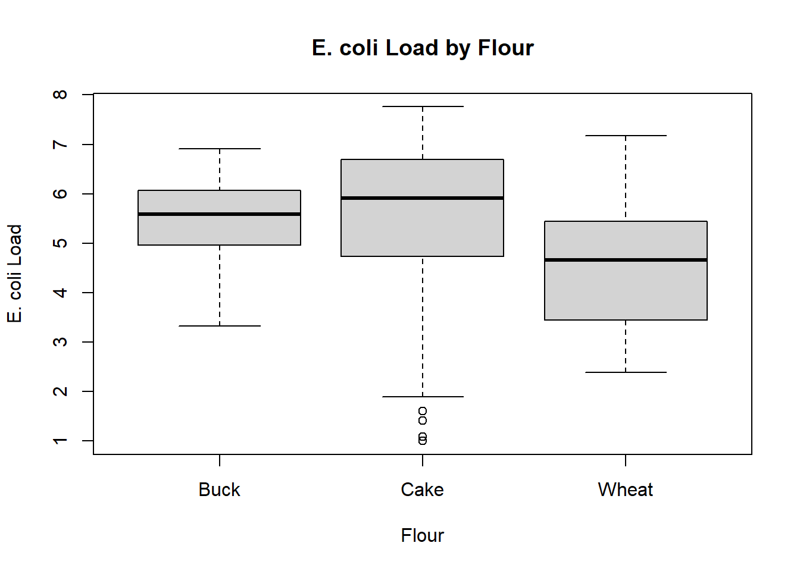
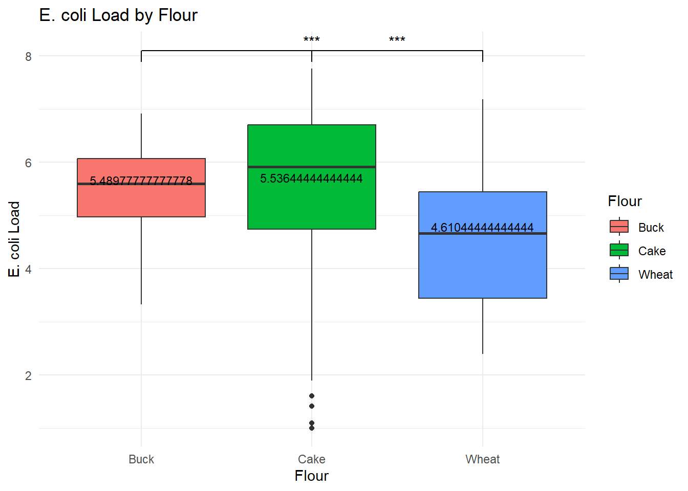
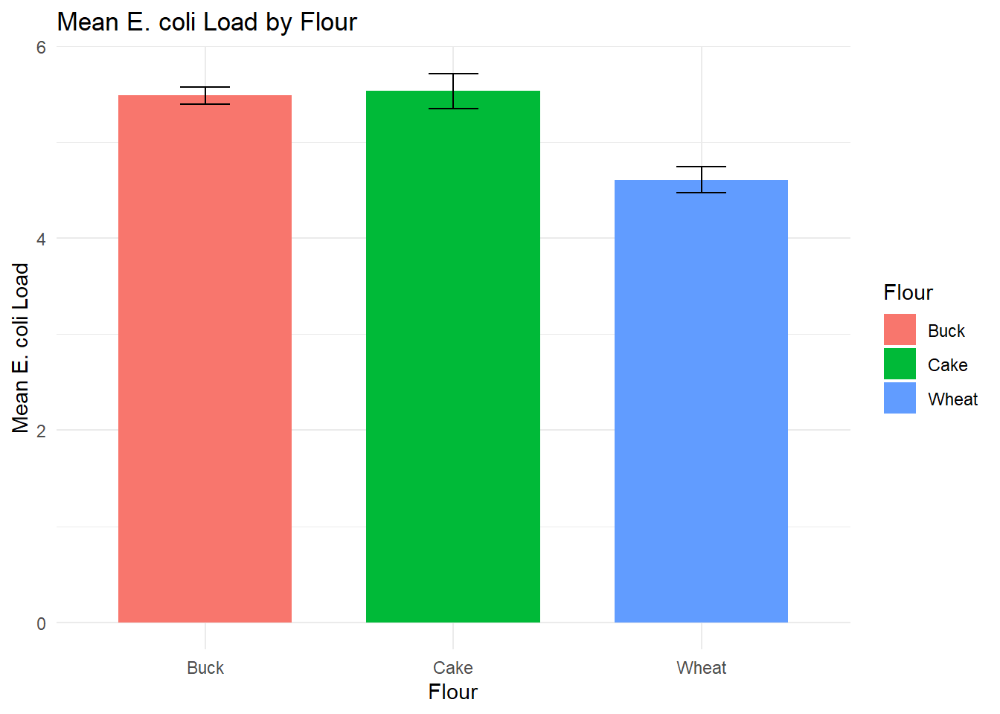
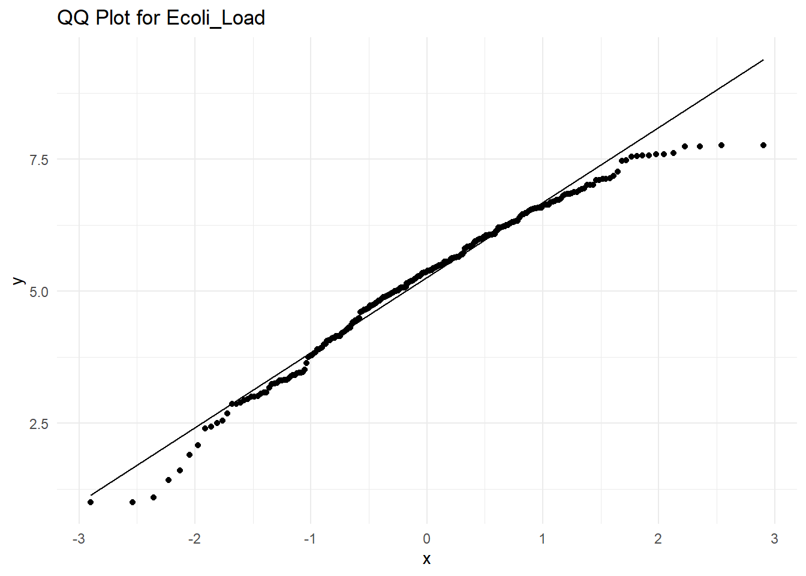
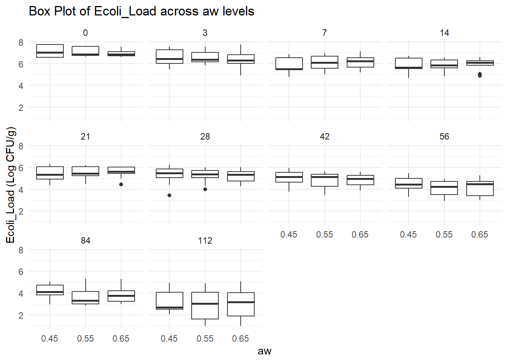
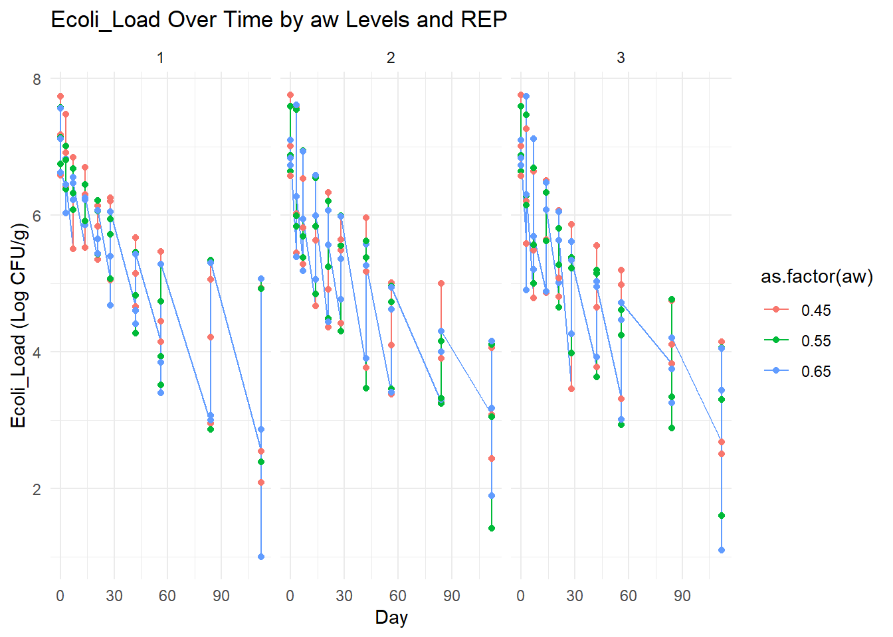
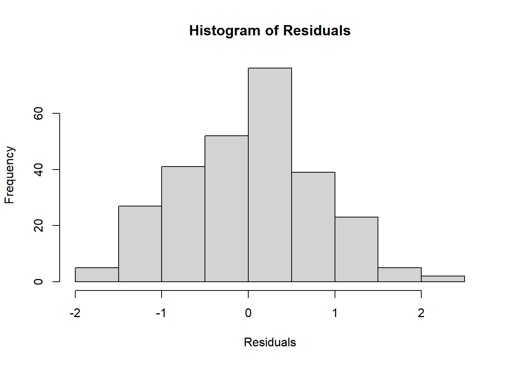
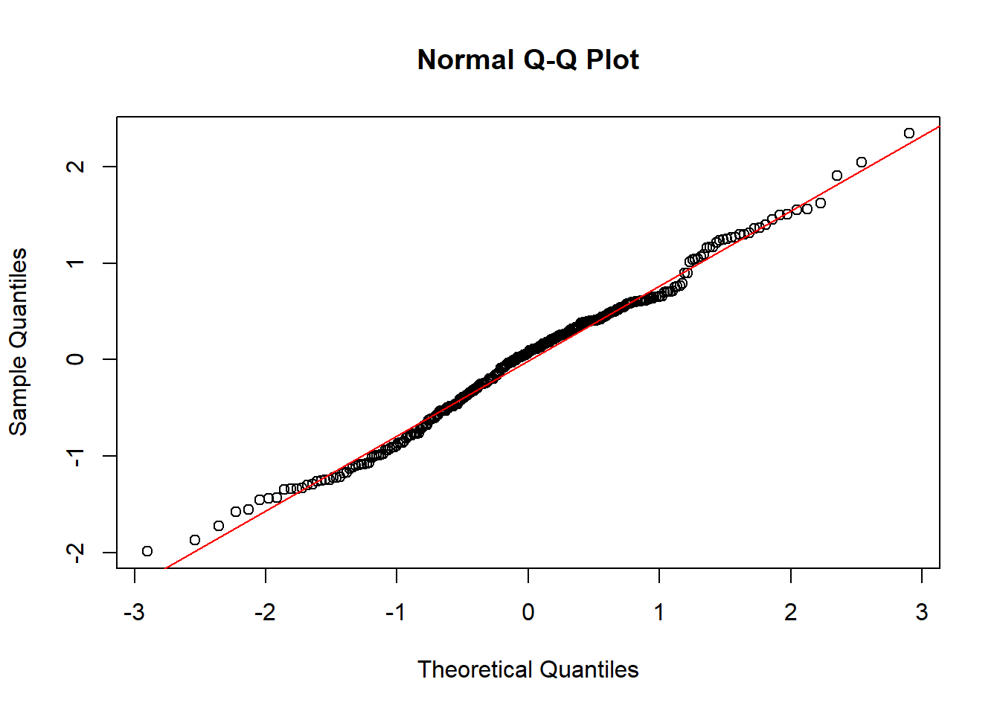
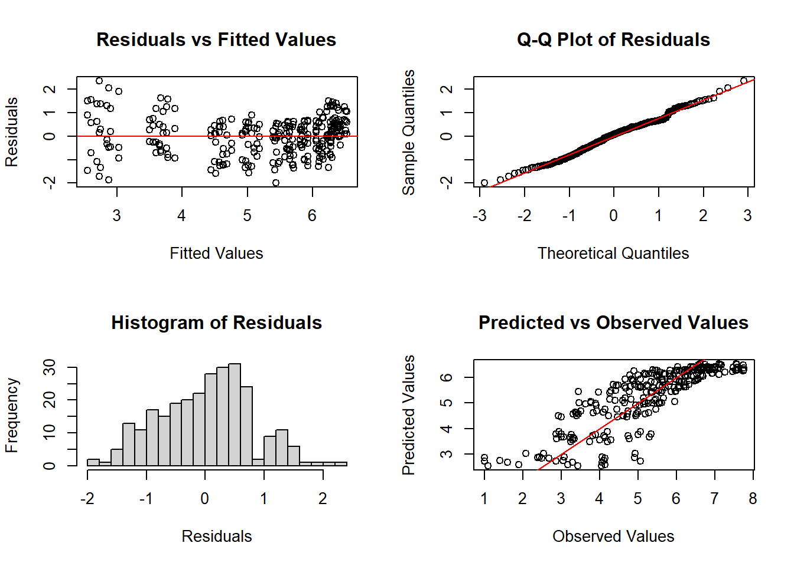

Researchers have inoculated E. coli to 3 different types of flour and subjected them to 3 different types of water activity. They are measuring the Log CFU/g (E. coli_load) at 10 different unequally spaced time points. Overall, they want to know the survival persistence of E. coli.
Note: - 0.35, 0.55 and 0.65 are the levels of water activity.
##Things that we could do-
Descriptive Statistics- To see whether the data set is normally distributed. Upon that, we’ll fit our model •Statistical Modeling: • Fit LM or GLM model • Fit a Generalized Linear Mixed Model (GLMM) to assess the effect of flour type, water activity, and their interaction over time on E. coli load. • Include time as a repeated measure and flour/aw interactions as fixed effects, while replicate (REP) could be a random effect. • Hypothesis Testing: • Investigate the significance of the flour type and water activity on E. coli persistence. • Assess if the interaction between flour type and water activity is significant. What else?
#Descriptive Statistics
# Load the dataset firstlibrary(readr)
Warning: package 'readr' was built under R version 4.3.3
Data_1 <-read_csv("Data-1.csv")
Rows: 270 Columns: 5
── Column specification ────────────────────────────────────────────────────────
Delimiter: ","
chr (1): Flour
dbl (4): aw, Day, REP, Ecoli_Load
ℹ Use `spec()` to retrieve the full column specification for this data.
ℹ Specify the column types or set `show_col_types = FALSE` to quiet this message.
library(dplyr)
Attaching package: 'dplyr'
The following objects are masked from 'package:stats':
filter, lag
The following objects are masked from 'package:base':
intersect, setdiff, setequal, union
boxplot(Ecoli_Load ~ Flour, data = Data_1, main="E. coli Load by Flour", xlab="Flour", ylab="E. coli Load")

Interpretation: The boxplot shows the E. coli Load by Flour Type across three types of flour: Buck, Cake, and Wheat.
Buck Flour:
The median E. coli load is around 5.5. The interquartile range (IQR) appears to be fairly narrow, indicating that the E. coli load values are relatively concentrated around the median. There are no obvious outliers.
Cake Flour:
The median E. coli load is higher than for Buck flour, around 6.5. The IQR is wider compared to Buck flour, indicating more variability in the E. coli load. There are several outliers at the lower end of the scale, suggesting that some samples had much lower E. coli loads compared to the bulk of the data. Wheat Flour:
The median E. coli load is lower than both Buck and Cake flours, at approximately 5. The IQR is wider than for Buck but narrower than for Cake flour. There are no obvious outliers.
Overall Interpretation:
Cake Flour tends to have the highest E. coli load, followed by Buck Flour and Wheat Flour, which has the lowest. There are significant differences between Wheat Flour and the other two types, indicating that the type of flour likely plays a significant role in the persistence of E. coli. This visualization supports the results from your Tukey HSD test, showing that Wheat Flour significantly differs from both Cake and Buck in terms of E. coli load
#Anova Test
aov_results <-aov(Ecoli_Load ~ Flour, data = Data_1)summary(aov_results)
Df Sum Sq Mean Sq F value Pr(>F)
Flour 2 49.0 24.493 13.73 2.11e-06 ***
Residuals 267 476.3 1.784
---
Signif. codes: 0 '***' 0.001 '**' 0.01 '*' 0.05 '.' 0.1 ' ' 1
As, it’s significanty, we’re running Tukey’s HSD
TukeyHSD(aov_results)
Tukey multiple comparisons of means
95% family-wise confidence level
Fit: aov(formula = Ecoli_Load ~ Flour, data = Data_1)
$Flour
diff lwr upr p adj
Cake-Buck 0.04666667 -0.4226149 0.5159482 0.9701759
Wheat-Buck -0.87933333 -1.3486149 -0.4100518 0.0000433
Wheat-Cake -0.92600000 -1.3952815 -0.4567185 0.0000155
Interpritation:
The Tukey HSD test indicates significant differences in E. coli load between Wheat and both Buck and Cake flour types. There is no significant difference between Cake and Buck flour types.
#Pairwise Comparison Plot
# Install and load ggsignif packagelibrary(ggsignif)
Warning: package 'ggsignif' was built under R version 4.3.3
library(ggplot2)
Warning: package 'ggplot2' was built under R version 4.3.3
Warning: The dot-dot notation (`..y..`) was deprecated in ggplot2 3.4.0.
ℹ Please use `after_stat(y)` instead.

Interpretation:
Wheat flour consistently has a lower E. coli load compared to both Buck and Cake flours, and this difference is statistically significant (as indicated by the asterisks). The similar means between Buck and Cake suggest that these two flour types have comparable E. coli loads, though Cake flour exhibits more variability and outliers. This boxplot visually supports the results from the Tukey HSD test, indicating that Wheat flour has a significantly lower E. coli load than both Buck and Cake flours. This graph effectively highlights the significant effect of flour type on E. coli load in the dataset.
#Interaction Plot
# Calculate means and standard errorssummary_data <- Data_1 %>%group_by(Flour) %>%summarise(Mean_Ecoli_Load =mean(Ecoli_Load, na.rm =TRUE),SE =sd(Ecoli_Load, na.rm =TRUE) /sqrt(n()) )# Plot with error barsggplot(summary_data, aes(x=Flour, y=Mean_Ecoli_Load, fill=Flour)) +geom_bar(stat="identity", position=position_dodge(), width=0.7) +geom_errorbar(aes(ymin=Mean_Ecoli_Load-SE, ymax=Mean_Ecoli_Load+SE), width=0.2) +labs(title="Mean E. coli Load by Flour", x="Flour", y="Mean E. coli Load") +theme_minimal()

# Assuming your data frame is called 'Data_1' and the column you're analyzing is 'Ecoli_Load'desc_stats <- Data_1 %>%group_by(aw, Day) %>%summarise(mean =mean(Ecoli_Load, na.rm =TRUE),median =median(Ecoli_Load, na.rm =TRUE),sd =sd(Ecoli_Load, na.rm =TRUE),min =min(Ecoli_Load, na.rm =TRUE),max =max(Ecoli_Load, na.rm =TRUE) ) %>%mutate(range = max - min)
`summarise()` has grouped output by 'aw'. You can override using the `.groups`
argument.
The echo: false option disables the printing of code (only output is displayed). #Data Distribution #Not_Necessary



#QQ Plot: Interpretation:
This QQ plot suggests that the distribution of Ecoli_Load departs from normality, particularly in the tails. This might indicate the presence of outliers or a skewed distribution. Depending on the extent of the deviation, you might consider transformations (e.g., log or Box-Cox) or using non-parametric methods if normality is an important assumption for further analysis.
Line Plot:
This plot shows the E. coli Load (Log CFU/g) over time across different levels of water activity (aw) and replicates (REP). The plot is separated by three panels representing replicates 1, 2, and 3. The x-axis represents Day, while the y-axis represents E. coli Load (Log CFU/g). Different colors are used to represent different levels of water activity (aw) (0.45, 0.55, and 0.65).
Key Observations: General Trend:
Across all replicates, there is a general decline in E. coli load over time. This indicates that the bacterial load decreases as the number of days increases, which is expected as time progresses during storage or treatment. Effect of Water Activity (aw):
The red points represent aw = 0.45, green points represent aw = 0.55, and blue points represent aw = 0.65. Although there is some variability, aw = 0.65 (blue) generally tends to result in a lower E. coli load compared to the lower levels of water activity (0.45 and 0.55). This is especially noticeable toward the end of the time period (Day 90). This suggests that higher water activity could be associated with more rapid reduction in E. coli load.
Replicate Effects:
There are three replicates (panels labeled 1, 2, and 3), and there seems to be some variation in patterns between replicates. For example: In Replicate 1, the initial E. coli load is higher, and the decline appears more gradual compared to the other two replicates. In Replicates 2 and 3, the load starts high but drops sharply around Days 30-60, suggesting a faster reduction in these replicates. While the overall pattern is similar across replicates, the exact magnitude of reduction and variability differs, indicating some possible random variation or replicate-specific conditions.
Interaction Between Time and Water Activity:
There seems to be a significant interaction between time and aw levels. Over time, the aw = 0.65 condition (blue points) tends to drop more steeply, whereas lower aw levels (0.45 and 0.55) maintain a higher E. coli load for longer periods. This could suggest that water activity has a substantial effect on the persistence of E. coli and that higher aw values promote faster reductions in bacterial load.
Conclusion: The plot visually confirms that E. coli load decreases over time, and this decline is influenced by the water activity level. Specifically, higher aw (0.65) appears to lead to a faster decline in E. coli compared to the lower aw levels. Additionally, while there is some variability between the replicates, the overall trend remains consistent across all replicates.
Fitting Mixed Model
library(lme4)
Loading required package: Matrix
Warning: package 'Matrix' was built under R version 4.3.3
# Fit a mixed model with REP as a random effectmodel <-lmer(Ecoli_Load ~ Flour + aw + Day + (1| REP), data = Data_1)# Check the summarysummary(model)
Linear mixed model fit by REML ['lmerMod']
Formula: Ecoli_Load ~ Flour + aw + Day + (1 | REP)
Data: Data_1
REML criterion at convergence: 568
Scaled residuals:
Min 1Q Median 3Q Max
-3.3109 -0.6330 -0.0583 0.4762 2.9031
Random effects:
Groups Name Variance Std.Dev.
REP (Intercept) 0.01508 0.1228
Residual 0.44661 0.6683
Number of obs: 270, groups: REP, 3
Fixed effects:
Estimate Std. Error t value
(Intercept) 6.87825 0.29466 23.343
FlourCake 0.04667 0.09962 0.468
FlourWheat -0.87933 0.09962 -8.827
aw -0.36111 0.49811 -0.725
Day -0.03242 0.00115 -28.195
Correlation of Fixed Effects:
(Intr) FlorCk FlrWht aw
FlourCake -0.169
FlourWheat -0.169 0.500
aw -0.930 0.000 0.000
Day -0.143 0.000 0.000 0.000
library(lme4)library(lmerTest)
Warning: package 'lmerTest' was built under R version 4.3.3
Attaching package: 'lmerTest'
The following object is masked from 'package:lme4':
lmer
The following object is masked from 'package:stats':
step
# Fit a mixed model with REP as a random effectmodel <-lmer(Ecoli_Load ~ aw + Day + aw * Day + (1| REP), data = Data_1)# Check the summarysummary(model)
Linear mixed model fit by REML. t-tests use Satterthwaite's method [
lmerModLmerTest]
Formula: Ecoli_Load ~ aw + Day + aw * Day + (1 | REP)
Data: Data_1
REML criterion at convergence: 660.1
Scaled residuals:
Min 1Q Median 3Q Max
-2.50918 -0.67586 0.09275 0.64834 2.95957
Random effects:
Groups Name Variance Std.Dev.
REP (Intercept) 0.01306 0.1143
Residual 0.62856 0.7928
Number of obs: 270, groups: REP, 3
Fixed effects:
Estimate Std. Error df t value Pr(>|t|)
(Intercept) 6.29789 0.47807 250.19786 13.174 <2e-16 ***
aw 0.18945 0.85156 264.00000 0.222 0.8241
Day -0.02417 0.00929 264.00000 -2.602 0.0098 **
aw:Day -0.01500 0.01671 264.00000 -0.898 0.3701
---
Signif. codes: 0 '***' 0.001 '**' 0.01 '*' 0.05 '.' 0.1 ' ' 1
Correlation of Fixed Effects:
(Intr) aw Day
aw -0.980
Day -0.713 0.712
aw:Day 0.705 -0.720 -0.989
Interpretation:
Model: Y=
The output from mixed effects model with the interaction term between aw and Day provides the following results:
Intercept (E. coli load when both aw and Day are zero): 6.29789 6.29789, highly significant with 𝑝<0.001 p<0.001.
aw (Effect of water activity alone): 0.18945, not statistically significant with p=0.8241.
Day (Effect of day alone):
−0.02417, statistically significant with p=0.0098, indicating that E. coli load decreases over days.
(Interaction effect between water activity and day):
−0.01500, not statistically significant with p=0.3701, suggesting the interaction does not significantly affect the E. coli load.
#Conclusions:
Day has a significant negative effect on E. coli load, indicating that as days progress, E. coli load decreases. The interaction between aw and Day is not significant, implying that the effect of days on E. coli load does not vary by different levels of water activity.
# Extract residuals and fitted valuesresiduals <-resid(model)fitted_values <-fitted(model)# Histogram of residualshist(residuals, main="Histogram of Residuals", xlab="Residuals")

# Q-Q Plotqqnorm(residuals)qqline(residuals, col ="red")

# Shapiro-Wilk Test for normalityshapiro.test(residuals)
Shapiro-Wilk normality test
data: residuals
W = 0.99171, p-value = 0.1333
The histogram and QQ Plot showing that the model following the Assumption. So we can fit this model
#Model Comparison
# Fit the model without the interaction termmodel_simple <-lmer(Ecoli_Load ~ aw + Day + (1| REP), data = Data_1)# Compare the models using ANOVAanova(model_simple, model)
refitting model(s) with ML (instead of REML)
Data: Data_1
Models:
model_simple: Ecoli_Load ~ aw + Day + (1 | REP)
model: Ecoli_Load ~ aw + Day + aw * Day + (1 | REP)
npar AIC BIC logLik deviance Chisq Df Pr(>Chisq)
model_simple 5 650.60 668.59 -320.30 640.60
model 6 651.79 673.38 -319.89 639.79 0.8142 1 0.3669
#Interpretation:
Chi-Square Test Statistic: The Chi-Square value (0.8142) measures the difference in fit between the two models.
p-value: The p-value (0.3669) is greater than the typical significance level of 0.05. Since the p-value is greater than 0.05, you fail to reject the null hypothesis that the simpler model (without the interaction term) is as good as the full model (with the interaction term). This suggests that the interaction term does not significantly improve the fit of the model.
So, we can use the model without the interaction effect.
#Residual VS Fitted Plot
# Define observed values from the dataobserved_values <- Data_1$Ecoli_Load # Assuming Data_1 is your data frame and Ecoli_Load is the response variable# Set up the plotting area to have 2 rows and 2 columnspar(mfrow=c(2, 2))# Plot 1: Residuals vs. Fitted Valuesplot(fitted_values, residuals, main="Residuals vs Fitted Values", xlab="Fitted Values", ylab="Residuals")abline(h=0, col="red")# Plot 2: Q-Q Plot of Residualsqqnorm(residuals, main="Q-Q Plot of Residuals")qqline(residuals, col ="red")# Plot 3: Histogram of Residualshist(residuals, main="Histogram of Residuals", xlab="Residuals", breaks=20)# Plot 4: Predicted vs. Observed Valuesplot(observed_values, fitted_values, main="Predicted vs Observed Values", xlab="Observed Values", ylab="Predicted Values")abline(a=0, b=1, col="red")

# Reset plotting layout to default (optional)par(mfrow=c(1, 1))